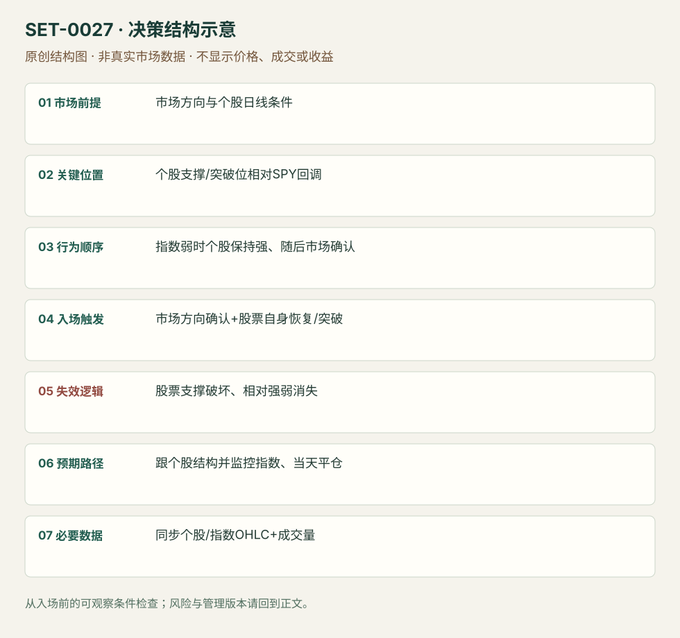

市场确认后的个股相对强弱交易
Market-confirmed Relative Strength / Weakness · SET-0027 · reviewed · v1.0.0
盈利证据：not_established。审查范围与来源版本见第13节；未知字段保留缺失原因。
1. 名称与快速概览
先用市场回调检验股票是否抗跌/逆市上涨，再等市场和个股方向同时支持入场。相对强弱是个股相对指数的表现，不是 RSI；市场判断在决策结构中有独立作用。
记录口径：PA supporting；必要数据 stock_OHLC、index_OHLC、volume。名称性质：编辑性描述名，英文保留来源术语以便检索。reviewed 只表示本条规则与证据记录审查通过，盈利状态为 not_established。
2. 本质与行为假说
假说是逆着指数压力仍能保持的股票有额外需求，指数转顺后更易释放。用同步价格响应确认，而不是仅比较两个无关百分比或把高beta当强势。
3. 适用市场与环境
选择流动性充足、有清楚日线位置和相对参与量的美股，市场有可辨认回调和恢复。市场极端单向、关系突然变换或股票受独立坏消息影响时不套用。
来源实用市场：美国个股与SPY、CAT期权（来源执行示例）。
Session：美股/ES现金参考段 09:30–16:00 America/New_York；收盘前平仓。期货夜盘单独建背景，不将其并入开盘区间。
跨市场：本版不主张已经验证的跨市场迁移；更换市场必须重定数据来源、流动性与session。
4. 出现前的观察清单
同一时间戳比较股票、SPY及必要的行业指数；画股票支撑、阻力、市场转向线，查日线是否仍冲突。OneOption的1OP/1OSI为专有指标版本，不在本包提供或伪造。
5. 形成过程与状态转换
市场回落 → 股票保持关键支撑/继续上行 → 市场恢复或停止施压 → 股票突破/顺势恢复确认 → 同时监控市场与个股结构。弱方向对称。
6. Entry trigger 与执行方式
SMB例用SPY越85和AAPL带量越126.25共同确认；本库可审查的价格版就是先有抗跌，再有同步方向与个股结构触发。OneOption原版使用1OP确认，本条将价格代理单独标为版本，不能声称效果等价。
7. Invalidation 与止损逻辑
个股所依赖的支撑破坏是价格风险边界；相对强弱消失且市场反向是软退出信息。初始止损不能只写“市场变弱”，应在股票上固定可成交价；来源跨日建议不采用为日内保护。
8. Exit、target 与 trade management
有序强势可按股票结构追踪，达到已知目标或相对表现下降减仓；当市场继续恶化即重新评估。日内部分全部在现金收盘前退出，来源CAT临近期权到期的gamma风险需单独建执行记录。
9. 常见 variations
强与弱对称计一条；股票本身与期权是执行载体版本，成本和损益不可混计；1OP专有版与公开价格版分开保存。
10. 失败方式与不交易条件
同步数据错误；指数反弹但个股仍弱；只看全天涨幅忽略入场前抗跌；把RS和RSI混为一谈；源例利润百分比受低价期权杠杆影响而错误外推。
11. 与相近 setups 的区别
12. 图表与案例解读
已看OneOption第55页：灰色SPY回调，CAT继续抬高；右侧作者展示CAT当天到期call报价。日期来自合约Nov01’19及章节叙事，未验证账户成交；这里仅用作相对强弱识别。
- [VIS-000030] 来源PDF第55页图表；定位：PDF页序 55。CAT 1分钟黑线价格与SPY灰线对照，市场回调时股票继续高；报价截图时区与图轴不同，不能直接合并为同一时钟。 验证：chart_viewed_pdf_page。
本地原创示意（VIS-000084，非真实市场数据）：

小屏阅读可打开原尺寸示意图并缩放。

此图用于对照识别顺序与风险定义；不计入真实案例覆盖率。
视觉材料元数据与查看范围
- VIS-000030 · real_source_chart / structure_and_trigger / chart_viewed_pdf_page
品种：CAT / SPY；日期：2019-11-01；周期：1分钟；时区：未知/不适用
时区未在画面中核对；作者示例；不是独立成交审计 - VIS-000084 · synthetic_structure_diagram / illustration_only / generated_not_market_evidence
品种：未知/不适用；日期：未知/不适用；周期：未知/不适用；时区：未知/不适用
无真实品种、日期或价格：这是结构示意
13. 证据、分歧与未知项
OneOption与SMB实践解释来自两个家族，支持共同决策结构；没有本条参数化策略的独立成本后回测。CAT资料是作者展示的价格/报价，未核对账户流水。
- [EVD-000050] Peter Stolcers，《Our Trading Methodology》，SRC-0026；定位：Market first / Relative strength / entry confirmation。支持：先判断市场，再选市场回落时保持强势的股票；市场方向确认后入场并观察相对强弱与技术支撑。
- [EVD-000051] Jeff Tomasulo，《Second Day Play》，SRC-0049；定位：AAPL 124 / SPY 84–85 case。支持：AAPL在SPY下降时守124；SPY恢复85且AAPL越126.25伴随量时买入，给出个股与市场共同确认。
- [EVD-000052] Pete Stolcers，《Powerful Trading Strategies (OneOption public ebook)》，SRC-0083；定位：PDF页序26及52–55。支持：区分RS与RSI；CAT在SPY回调时继续上涨，1分钟对照及交易截图展示日内执行。
14. 可用于复盘的检查表
- ☐ 下单前的前提可核对：市场方向与个股日线条件
- ☐ 事前标记位置：个股支撑/突破位相对SPY回调
- ☐ 行为按顺序出现：指数弱时个股保持强、随后市场确认
- ☐ 实际触发符合选定版本：市场方向确认+股票自身恢复/突破
- ☐ 事先写明本次否定条件：股票支撑破坏、相对强弱消失
- ☐ 目标/路径只用当时已知信息：跟个股结构并监控指数、当天平仓
- ☐ 数据满足 同步个股/指数OHLC+成交量；记录时间、点差、滑点、队列和未成交
- ☐ 记录截止平仓及规则偏离；正常亏损不事后改成“未成立”
15. 后续验证问题
怎样剔除beta影响而保留真正的相对表现？行业与SPY给冲突时如何处理？等待市场确认与直接买强股的差别？
双向相关导航
- SET-0030 领导市场先行的滞后市场 IB 突破 0030 两个相关期货同方向、领导市场先破IB带动滞后市场；本条先用相反响应检验股票强弱再等市场。
- SET-0028 新消息后的第二日关键位接受 0028 必须有前一日新消息和次日关键位接受；本条不必须第二天事件。
- SET-0049 首段收益方向驱动的最后半小时 0027 比较股票与指数相对响应，本条预测同一资产的不同时段。